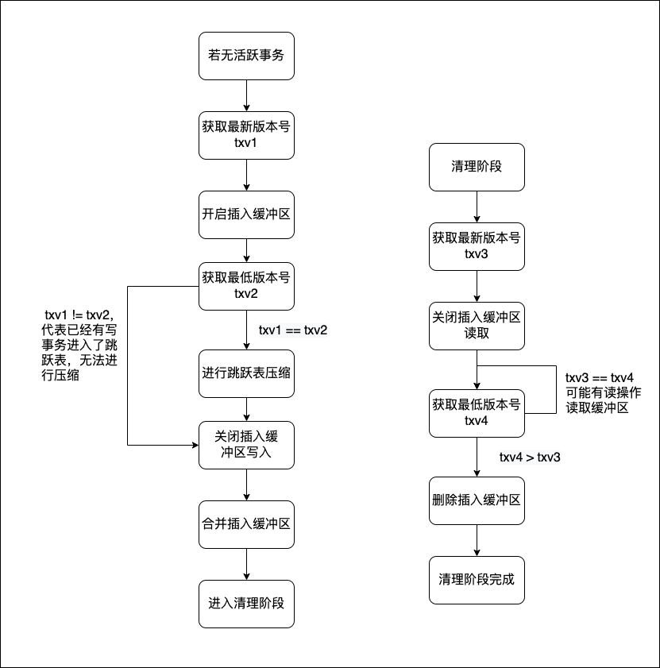

本项目主要是为了解决内存中的并发读写问题，实现了 Snapshot 级别的事务隔离，实现了读写并发，以及不同键值对之间的并发写入。表的索引部分参考了 leveldb 中的跳跃表，实现了跳跃表结点的原子插入和惰性删除，基于乐观并发机制实现了索引部分的无锁并发读写。表的值部分按照链表的形式存储，借助全局事务序列号实现读写并发，写写悲观并发控制。
具体项目背景：在设计 rpc 服务器时，有时候会需要在进程内存储一些描述符等数据，这些数据需要由 rpc 服务器的后台线程和服务线程共同访问，需要并发读写。
简介
跳跃表
- 节点之间使用 CAS 实现原子修改，节点插入时从最底层插入，基于乐观并发机制实现插入操作的并行。
- 跳跃表节点采用原子值，实现修改操作和读取操作的并行。
- 使用惰性删除机制，将删除操作转换为修改操作。
- 利用 Compact 接口，基于 Copy On Write 技术实现已删除节点的定时释放。
版本链表
- 基于原子指针实现无锁链表，采用悲观并发控制实现插入的竞争，一个版本链表同时只允许一个操作。
- 限制单个操作的提交时间，防止阻塞其他操作（由于操作在内存中完成，因此不需要等待很久）。
- 操作提交阶段，检查当前活跃事务，并删除过时的版本链表部分。
事务控制
- 事务控制采用统一事务协调器来完成，每一个操作会分配一个版本号，从而实现事务的 Snapshot 隔离机制。
- 所有操作由事务管理器派生，提供批量写入、游标读取、简单回滚事务等功能。
- 为了减少对版本号的竞争，读操作会使用当前最新的版本号的拷贝，只有写操作需要等待版本号的发放。
- 所有的版本对象都有一个原子引用计数，每次拷贝会导致引用计数加一，析构会导致引用计数减一；当引用计数为零时，会在析构函数中向事务协调器发送通知，示意当前版本已经完成提交。
内存表
- 提供迭代器，迭代器会使用跳跃表最底层进行遍历
- 所有操作都可以并行，读操作默认使用快照隔离级别、写操作采用悲观并发机制、删除操作采用惰性删除的机制
- 使用后台线程对跳跃表删除节点进行压缩，压缩时不会阻塞读写
内存表压缩过程
由于跳跃表中直接操作删除节点会与读写互斥，因此需要一定的策略来保证读写不会被阻塞，这里使用了一个插入缓冲区，当需要进行压缩操作时，开辟一个新的插入缓冲区，将跳跃表设置为只读，当压缩完成后再将缓冲区进行合并。压缩过程的难点只要在于保证无事务在压缩操作时在跳跃表上进行，即：某用户操作开始 -> 跳跃表变为只读 这种情况无法阻塞用户操作，采用了类似 2PC 的策略。
- 两次检查当前事务版本，用于确保更改表状态时没有新事务发生，否则压缩操作可能会与慢事务冲突。
- 在合并插入缓冲区时，两次检查事务版本，用于确保没有正在发生的读操作。
以下流程图表示了内存表的压缩过程：

用户接口
CRUD
{c++}
// 初始化一个表
ValueTable table;
// 插入一个键值对
table.emplace("key", "value");
// 查找键值对是否存在
table.exist("key");
// 读取键值对
table.read("key");
// 修改键值对
table.update("key", "new_value");
//删除键值对
table.erase("key");
遍历
{C++}
// 从开始进行遍历
for(auto it = table.begin();it != table.end();++it){
auto value = *it; // 读取值
...
}
// 从指定的某个值进行遍历
for(auto it = table.find("start");it != table.end();++it){
auto value = *it; // 读取值
...
}
// 遍历指定的范围
for(auto it = table.find("start"),end = table.find("end");it != end;++it){
auto value = *it; // 读取值
...
}
批处理
{C++}
// 批量插入键值对，无法实现回滚
std::vector<std::pair<std::string, std::string>> kvs = {{"k1","v1"},{"k2","v2"}};
bool finished = table.bulkWrite(kvs);
// 使用事务插入键值对，如果失败会回滚所有操作
std::vector<std::pair<std::string, std::string>> kvs = {{"k1","v1"},{"k2","v2"}};
bool committed = table.transaction(kvs);
引用表
{c++}
// table1 作为 table2 的只读引用
ValueTable table1,table2;
table1.getViewFrom(table2);
性能测试
以下性能测试选取 std::map<std::string,std::string> 进行对比，多线程互斥时采用std::lock_gurad<std::mutex>加锁来获取更好的性能。测试环境为 MacOS Ventura，双核7 代 i5 处理器，编译器采用clang 14.0.0，C++ 17 标准。
单线程主键自增插入
测试用例选取键值为"1"~"x"，并且自增排序。目的为测试 SkipList 的单线程插入性能。
| 插入 10 W 条数据 | 插入 100W 条数据 | 插入 500W 条数据 | 插入 1000W 条数据 |
| std::map | 57ms | 512ms | 2732ms | 5900ms |
| SkipList(18) | 69ms | 681ms | 4347ms | 10100ms |
| SkipList(32) | 62ms | 617ms | 3212ms | 8600ms |
根据测试结果，当数据量在 10W 以下时，跳跃表与std::map的插入性能差别较小；当数据量在 100W~500W 范围内，采取 32 层级的跳跃表，性能可以保证与std::map差距较小；当数据量达到 1000W 级别时，即使使用 32 层级的跳跃表，性能也与 std::map 差距较大。
多线程自增读取模拟读取
采用 10W 数据进行测试，目的为测试 ValueTable 的多线程读写性能。ValueTable 采取 18 层级跳跃表作为索引。
| 双线程读取 | 四线程读取 | 双线程读取、双线程写入 | 四线程读取、双线程写入 |
| std::map | 106ms | 497ms | 488ms | 786ms |
| ValueTable | 66ms | 108ms | 371ms | 389ms |
多线程单点并发读取
测试用例选取了键值对 "1" : "1" 作为读取和写入的对象，读写各操作 10W 次，测试结果如下：
| 双线程读取 | 双线程读取、双线程写入 |
| std::map | 2ms | 68ms |
| ValueTable | 9ms | 377ms |
可以看到，ValueTable 在单点读写下性能下降非常严重，这是由于单点写入模式下，MVCC 版本链实质上已经退化，并在所有写入线程在事务管理器处、版本链表处都需要获得锁，并且为了支持事务操作，写入提交阶段版本链表的加锁时间会更长。
性能瓶颈
- SkipList 进行节点插入的时候，需要等待分配内存，可以考虑加入内存预分配的机制，利用后台线程批量分配实例，需要加入的时候直接取用。
- 统一事务协调器计算当前活跃版本时，目前是借助红黑树来完成的，这里需要加锁，如果短时间内具有大量的事务会造成性能大幅度下降；目前暂未想到优化方法。
已知问题
- 进行压缩操作的时候使用迭代器会导致插入缓冲区无法被迭代器遍历，在进行压缩时应当使用两个迭代器进行归并操作，待修复